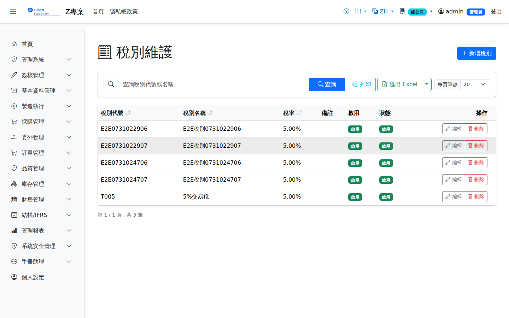

稅別Tax
路由：/BAS/Tax | 稅率代碼與稅率維護Route: /BAS/Tax | Tax codes and rates
稅別定義系統中所有可使用的稅率代碼（如 TAX5 = 5%、ZERO = 0%、EXEMPT = 免稅）。採購單、銷售單等選擇稅別後，系統自動依稅率計算稅額。Tax codes define every tax rate available in the system (TAX5 = 5%, ZERO = 0%, EXEMPT = tax exempt). Once a tax code is chosen on a purchase or sales document, the tax amount is calculated automatically from its rate.

稅別畫面截圖（示意，實際欄位/資料依權限與查詢條件而異）Tax screenshot (illustrative; actual fields and data vary by permission and query criteria)
欄位說明Field reference
| 欄位名稱Field | 必填Required | 說明Guide |
|---|---|---|
| 稅別代碼Tax Code | 必填Required | 唯一識別碼（例：TAX5、ZERO、EXEMPT）Unique code (e.g. TAX5, ZERO, EXEMPT) |
| 稅別名稱Tax Name | 必填Required | 完整名稱（例：應稅 5%、零稅率、免稅）Full name (e.g. taxable 5%, zero-rated, exempt) |
| 稅率（%）Tax Rate (%) | 必填Required | 百分比數值（5% 填 5；零稅率填 0）Percentage value (enter 5 for 5%; enter 0 for zero-rated) |
| 備註Notes | 補充說明（例：適用出口退稅）Notes (e.g. applies to export tax refund) | |
| 是否啟用Active | 停用後不可在新單據中選取Once inactive, cannot be selected on new documents |
操作步驟Steps
1
進入「基本資料 > 稅別」，點「新增」。Go to "Basic Data > Tax" and click "Add".
2
填入稅別代碼、名稱、稅率（%），視需要填備註。Enter the tax code, name and tax rate (%), plus a note if needed.
3
點「儲存」，稅別即可在採購/銷售單中選用。Click "Save"; the tax code can now be selected on purchase and sales documents.
修改稅率Changing a tax rate
若政府調整稅率，建議做法如下：If the government changes the tax rate, the recommended approach is:
1
停用舊稅別（取消勾選「是否啟用」），保留歷史記錄。Deactivate the old tax code (uncheck "Active") so the history is kept.
2
新增一個新稅別代碼（例如 TAX8），填入新稅率後啟用。Create a new tax code (e.g. TAX8), enter the new rate and activate it.
3
更新公司主檔或供應商設定的預設稅別至新代碼。Update the default tax code on company and supplier records to the new code.
建議建立：TAX5（應稅 5%）、ZERO（零稅率）、EXEMPT（免稅）三種基本稅別，涵蓋大多數採購/銷售情境。Create the three basic tax codes — TAX5 (taxable 5%), ZERO (zero-rated) and EXEMPT — to cover most purchase and sales situations.
注意：Note:稅別為全域設定（全公司共用），修改稅率或停用稅別前，請確認無進行中的單據仍在使用。 Tax codes are global (shared company-wide). Before changing a rate or deactivating a code, make sure no open documents still use it.